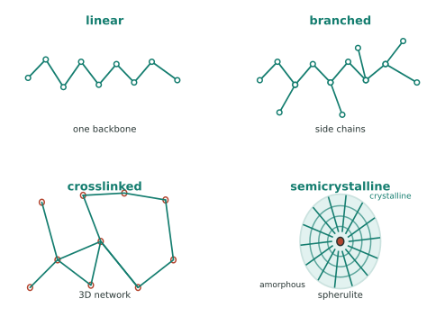

本页目录
性能 III · 高分子：链的物理
塑料、橡胶、纤维、涂料、生物组织——高分子占人类使用材料体积的一半以上，却遵守一套与金属陶瓷完全不同的规则：性能由"链"的构象、缠结与运动决定，且时间与温度可以互换。本页给这套规则的最小完整版。
学习层：给一只高分子密封圈做时温等效预测，先判断观察窗里的松弛状态
1. 具体材料工程情境：弹性体密封圈的温度—寿命窗口
把一只线性聚合物密封圈看作标准线性固体的小应变教学代理。工程师在室温短时试验之外，还要估计较高温度下的应力松弛：同一只密封圈在装配预应变保持不变时，观察窗结束的模量是否已经降到橡胶平台，还是仍处在玻璃态高模量段。这里的 WLF 参数是某一材料/温区的经验标定，不是所有聚合物的常数。
2. 必须作答的预测门：温度、Deborah 数与一个松弛时间
揭示前先回答三题：在 WLF 经验温区内升温到高于 \(T_{\rm ref}\)，\(\tau(T)\) 变快还是变慢？若 \(\mathrm{De}=\tau/t_{\rm obs}\ll1\)，观察窗结束时模量更接近高平台还是低平台？在 \(t=\tau\) 时，指数项 \(\exp(-t/\tau)\) 是 \(1\)、\(1/e\) 还是 \(0\)？三题完成后才显示时间—温度位移、模量曲线和账本。
3. 正式模型桥：WLF 位移 → Deborah 数 → 应力松弛模量
标准线性固体的松弛模量取
\(T\) 与 \(T_{\rm ref}\) 的温差用 K 或 °C 都相同；温度本身在热力学表达中用 K。按这个符号约定，\(T>T_{\rm ref}\) 且 \(C_1,C_2>0\) 时 \(a_T<1\)，所以当前温度的松弛时间变短；同一条参考主曲线上的约化时间是 \(t_{\rm red}=t/a_T\)，升温等价于在参考温度观察更久。\(E_{\infty}\)、\(E_1\) 用 GPa，时间用 s，\(\mathrm{De}\) 与 \(a_T\) 无量纲。
4. 动手实验：把温度、参考时间和观察窗联动
JavaScript 失效时的静态 fallback：默认取 \(E_{\infty}=0.020\ \mathrm{GPa}\)、\(E_1=2.980\ \mathrm{GPa}\)、\(\tau_{\rm ref}=1000\ \mathrm s\)、\(T_{\rm ref}=20\ ^\circ\mathrm C\)、\(T=30\ ^\circ\mathrm C\)、\(C_1=17.44\)、\(C_2=51.6\ \mathrm K\)、\(t_{\rm obs}=100\ \mathrm s\)。计算得 \(\log_{10}a_T=-2.83117\)、\(a_T=0.00147513\)、\(\tau(T)=1.47513\ \mathrm s\)、\(\mathrm{De}=0.0147513\)、\(t_{\rm red}=67790.5\ \mathrm s\)；\(E(t_{\rm obs})\approx0.0200\ \mathrm{GPa}\)，\(E(\tau)=1.11628\ \mathrm{GPa}\)。
| 账本量 | 静态结果 | 单位 / 读法 |
|---|---|---|
| \(E_{\infty}\) / \(E_1\) | \(0.020\) / \(2.980\) | GPa |
| \(a_T\) | \(0.00147513\) | 无量纲；WLF 时间位移因子 |
| \(\tau(T)\) | \(1.47513\) | s |
| \(t_{\rm obs}\) | \(100\) | s |
| Deborah 数 \(\mathrm{De}\) | \(0.0147513\) | \(\tau/t_{\rm obs}\)；观察窗远长于松弛时间 |
| \(t_{\rm red}=t_{\rm obs}/a_T\) | \(67790.5\) | s；参考温度上的等效观察时间 |
| \(E(t_{\rm obs})\) | \(0.0200\) | GPa；接近 \(E_{\infty}\) |
| \(E(\tau)\) | \(1.11628\) | GPa；\(E_{\infty}+E_1/e\) |
5. 误区与模型边界：WLF 是经验位移，不是事故的单因果解释
- WLF 只应在已标定的经验温区、指定热历史和时间窗内使用；这里还假定线性小应变、热流变简单材料和单一松弛时间。交联、结晶、多相、含水、化学老化、非线性大应变或多弛豫谱都可能破坏单一 \(a_T\) 的平移。
- 在本符号约定下，升温使 \(a_T\) 与 \(\tau(T)\) 变小，增加观察时间使 \(t/\tau\) 变大；两者都把曲线推进到更松弛的一侧，但不能把“升温 = 永远只改一个时间轴”迁移到所有聚合物。
- 低温密封失效常同时受 \(T_g\) 相对工作温度的位置、加载速率、预压缩、密封间隙/摩擦、几何、材料配方和环境影响。挑战者号 O 形圈事故的工程因果链很复杂；低温与快速加载是重要背景，但不能压缩成单一 \(T_g\) 机制，也不能用本页代理替代事故重建与合格鉴定。
- 这条 \(E(t)\) 曲线只描述应力松弛的教学模型；真实寿命还需要松弛谱、温度循环、疲劳、氧化/水解和界面接触证据。
迁移问题：若同一密封圈在更高温度下短时测试显示已经松弛，而长期室温仍保持较高密封力，你会先检查 \(a_T\) 的温区、加载历史还是松弛谱？若材料是半结晶聚合物并跨过 \(T_g\) 与 \(T_m\) 之间的组织变化，哪一项边界会先使简单 TTS 失效？
1. 链的语言
结构层级：单体 → 链（分子量 \(M\)，注意是分布不是单值：\(M_n\) 数均、\(M_w\) 重均、\(M_w/M_n\) 多分散度）→ 链的构象（无规线团，均方末端距 \(\langle R^2\rangle \propto N\)——🔗 随机游走！数学站的布朗运动就是高分子链的构象统计）→ 凝聚态（非晶/半结晶/交联网络）。

三分类（决定加工方式的第一问）：
| 类型 | 结构 | 加热行为 | 例 |
|---|---|---|---|
| 热塑性 | 线型/支化，链间弱键 | 可反复熔融成形（可回收） | PE、PP、PET、PC、尼龙 |
| 热固性 | 三维交联网络 | 不熔（分解） | 环氧、酚醛、不饱和聚酯 |
| 弹性体 | 轻度交联 + \(T_g\) 低于室温 | 高弹形变 | 天然橡胶、硅橡胶 |
支化与立构规整性：HDPE（线型、高结晶、硬）vs LDPE（支化、低结晶、软）——同一个单体，因链的拓扑差出两种商品；等规聚丙烯能结晶（Ziegler–Natta 催化剂的诺奖工作），无规聚丙烯是黏胶。
2. 玻璃化转变：高分子的中心温度

\(T_g\) 决定用途：室温在 \(T_g\) 之下 = 硬塑料（PS、PMMA、PC）；之上 = 橡胶（天然橡胶 \(T_g \approx -70\) °C）。PVC 加增塑剂把 \(T_g\) 从 +80 拉到 -40 °C——同一种聚合物做出下水管与雨衣，配方工程的教科书案例。
半结晶聚合物有两个温度：\(T_g\)（非晶区解冻）与 \(T_m\)（晶区熔化）——PET 瓶身在两者之间被吹塑取向；结晶度决定透明度（球晶散射光 ⇒ 结晶 PE 乳白、非晶 PS 透明）与强度。
3. 黏弹性：时间与温度可以互换
高分子既非纯弹性也非纯黏性——应力响应依赖时间尺度：蠕变（恒应力下持续变形——塑料椅子坐久了塌）、应力松弛（恒应变下应力衰减——密封圈失效）、滞后（循环加载生热——轮胎滚动阻力）。
时温等效原理（WLF）：在已标定的经验温区、线性小应变和热流变简单材料前提下，升高温度会使松弛时间变短，等价于在参考温度延长观察时间；用本文约定即 \(a_T<1\)、\(t_{\rm red}=t/a_T\) 变大。它不是所有聚合物、所有温区和所有加载历史都成立的普适换轴。\(10^{-3}\) s 的快速加载下橡胶的表观响应可能更偏高模量；低温密封风险还可能来自弹性恢复变慢、接头转动或间隙变化使密封压力建立不足，以及磨损/侵蚀、材料状态和环境等。挑战者号 O 形圈事故涉及这条多因素链，不能声称试样一定跨过 \(T_g\)，也不能把事故压缩成单一 \(T_g\) 机理。主曲线法：短时高温实验外推长时室温寿命——必须先验证 TTS 和热历史，再把它作为高分子寿命预测工具。
橡胶弹性的熵起源（反直觉之最）：拉伸橡胶时链从无规线团被拉直 ⇒ 构象熵下降，回复力来自熵而非键的伸长：
——弹性模量正比于温度：加热橡胶带它会收缩（金属受热膨胀，橡胶受热"变强"）；快速拉伸橡皮筋贴嘴唇会觉得热（熵减放热）。这是热力学第二定律在你手里的实物演示。
4. 增韧、共混与复合
增韧机制：橡胶粒子增韧（HIPS、ABS——粒子引发大量银纹/剪切带耗能）；纤维增强（玻纤/碳纤 + 环氧 = 结构复合材料，🔗 机器的力学站材料页）；共混与相容剂（多数聚合物互不相容——界面工程是配方核心）。
降解与老化：紫外（光氧化，加炭黑/受阻胺）、热氧、水解（PET、尼龙）、应力开裂（ESC——洗涤剂 + 应力使 PE 开裂）。塑料没有"疲劳极限"意义上的永久安全区，寿命是配方 + 环境的函数。
可持续性一瞥：机械回收（分选与降级）、化学回收（解聚回单体，PET 与聚酯路线最成熟）、生物基/可降解（PLA、PHA——注意"可降解"通常需工业堆肥条件，非自然环境速降）。这条线的技术与政策变动快，前沿页保持更新。
5. 数字感与反直觉
- \(T_g\)（°C）：硅橡胶 -125 ｜ 天然橡胶 -70 ｜ PE -110（但 \(T_m\) 130）｜ PP -10 ｜ PET 75 ｜ PC 150 ｜ PS 100；
- 模量跨度：橡胶 ~1 MPa → 玻璃态塑料 ~3 GPa → 碳纤维 ~230 GPa（同为"有机材料"，四个数量级）；
- 反直觉：橡胶加热收缩、拉伸放热（熵弹性）；高分子的强度随分子量增加而增（需超过缠结分子量才有力学意义）；"塑料疲劳"往往是热失效——滞后生热导致局部软化，与金属疲劳机理完全不同。
【研】对标 Rubinstein & Colby《Polymer Physics》、Ward《Mechanical Properties of Solid Polymers》；标度理论、Rouse/蛇行模型（reptation，de Gennes 诺奖）、WLF 方程推导是研究生主干。
下一页回到无机世界最古老也最前沿的家族——陶瓷与玻璃：为什么它们强而脆，工程上如何与这种脆性共处。